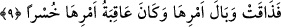
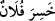

Fakîr (Bursevî)’nin kanaatine göre Allah Teâlâ hesaba çekme ile azap etmeyi -
sebepleri insanların Yüce Allah’ın ve peygamberlerinin emrinden çıkmaları ve yüz
çevirmeleri olduğu halde- kendi nefsine izafe etmesi peygamberlerin Allah Teâlâ’da
fânî olmalarından dolayıdır. Çünkü onlar bütün işlerinde Allah’ı vekil edinmişler,
tasarruf, kahr ve benzeri şeylere mâruz kalmayı terk etmişlerdir. Çünkü peygamberler
mâneviyat ve inançları kuvvetli olduktan sonra peygamber olarak gönderiliyorlar. Bu
nedenle de ümmetlerinin kendilerini yalanlamalarına sabrediyorlar. Eğer kuvvetli inanç
ve itikada sâhib olmadan peygamber olarak gönderilmiş olsalardı belki de kendilerini
yalanlayanları şiddetle yakalayıp cezâlandırırlar, helâk ederlerdi. Allah’ın kemal sâhibi
velî kullarını da bu peygamberlere kıyas edebiliriz.
9. Böylece onlar da yaptıklarının karşılığını tatmışlar ve işlerinin sonu tam bir
hüsran olmuştur.
“Böylece onlar da yaptıklarının karşılığını” inkârlarının zararlarını, mâsiyetlerinin
cezâsının ağırlığını “tatmışlar” yâni yenilecek bir nesnenin tadına bakan kimsenin
hissetmesi gibi hissetmişlerdir “ve işlerinin sonu” korkunç ve daha beteri olmayan
“tam bir hüsran olmuştur.” Yâni zarar verenler, yaptıklarının daha kötüsünü tadarak
hayat ve menfaatlerden mahrum kaldılar ve büyük cezâlara mübtelâ oldular.
Onların ticaretleri hüsranla sonuçlanmış, ömür ve sağlık gibi iki değerli servetlerini
zâyi ettikleri için ve bu ömürlerini Allah’ın emirlerine aykırı hareket etmekle
tükettiklerinden hiçbir kâr elde edememişlerdir.
Müfredat’ta açıklandığına göre Arapçada “el-husr” ve “el-husrân” sermayenin zâyi
edilmesi demektir. Bu fiil insana nisbet edilir ve
“
/hasıra fülanun” denir, ayrıca aynı fiil bir fiile de nispet edilerek “
/hasırat ticâratuhû” yâni “filanca kişinin ticareti kazançlı olmamıştır” denilir. Aynı
zamanda ‘hasira’ fiili, mal ve dünya makamı gibi hârici kazançlar için de kullanılır.
Fiilin bu şekilde kullanılması çoğunluktadır. Bunun yanında sağlık, selamet, akıl, îman
ve sevap gibi değerli nesneler için de kullanılmaktadır.
Âyet-i kerîme “ehlu’l-karye”; yâni belde halkı, terimiyle insan varlığına işâret
etmektedir ki bu da nefis, heva ve heves ve diğer kuvvetlerdir. Çünkü bunlar ruhun
hükmünden çıkmışlar, şeriatın hükmüne girmemişlerdir. Yine bu değerler kalbin, sırrın
ve hafînin emrine uymaktan da yüz çevirmişlerdir. Bu nedenle gönüllerine Hakk’ın
tecellî etmesine mâni olan hicap azâbına uğramışlar, dünya denizinde, dünyanın
şehvetleri ve lezzetlerinde helâk olmuşlardır. Bunların işlerinin sonu ise dalâletin
hüsranı, cehâletin ateşidir.